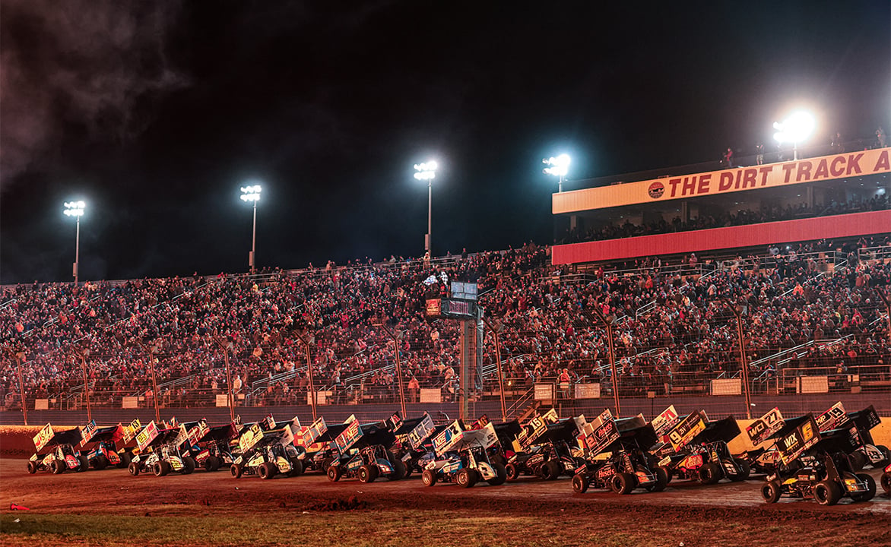

2026 World of Outlaws Sprint Car Year in Review
David Gravel claimed a third straight title while six first-time winners and 24 different feature victors highlighted the 49th season.

World of Outlaws published its 2026 NOS Energy Drink Sprint Car Series year-in-review on Wednesday, recapping a nine-month, 49th season capped by David Gravel’s third consecutive championship. Driving the Big Game Motorsports No. 2, Gravel joined Steve Kinser, Donny Schatz and Brad Sweet as the only drivers to win three straight titles in series history and tied Sammy Swindell with three championships overall, according to the series.
Gravel recorded 11 wins, 32 podiums, 48 top-fives and 66 top-10s in 75 starts, finishing 86 points ahead of runner-up Buddy Kofoid, World of Outlaws reported. Gravel’s marquee victory came at Huset’s Speedway in June, when he won the BillionAuto.com Huset’s High Bank Nationals for a series-record $300,000 payday. The season also produced six first-time winners: Kasey Kahne at Williams Grove Speedway while substituting for Anthony Macri, Bryce Lucius at Attica Raceway Park’s Brad Doty Classic, Chris Windom on the Night Before the Ironman, Garet Williamson at River Cities Speedway, Kevin Gobrecht Rookie of the Year Emerson Axsom at Huset’s and Justin Sanders in Stockton Dirt Track’s $83,000 Dennis Roth Classic.
Twenty-four different drivers won across 75 features, one shy of the 2004 series record of 25, according to the review. Kofoid led all drivers with 17 wins — breaking Danny Lasoski’s 1999 Roth Motorsports single-season team mark of 16 — followed by Gravel and KCP Racing newcomer Sheldon Haudenschild with 11 apiece, while Kyle Larson won his fourth Knoxville Nationals after flying to Iowa from Richmond Raceway.